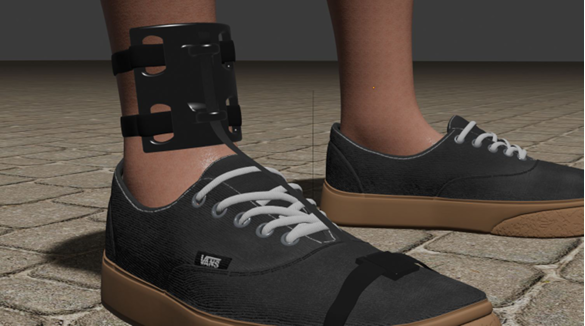
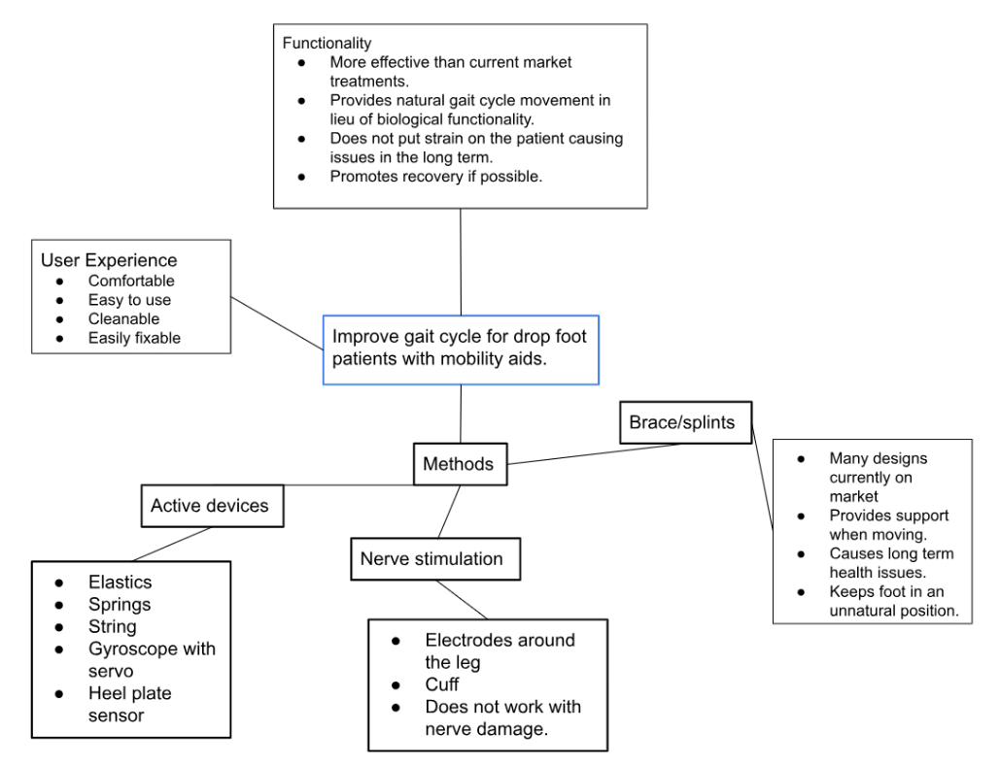
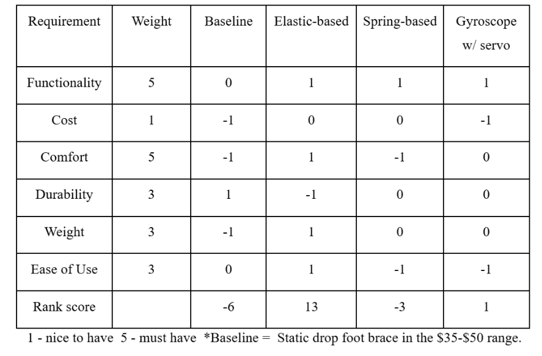
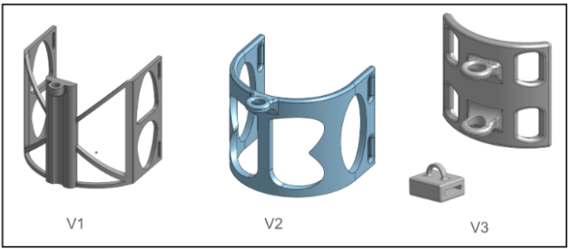
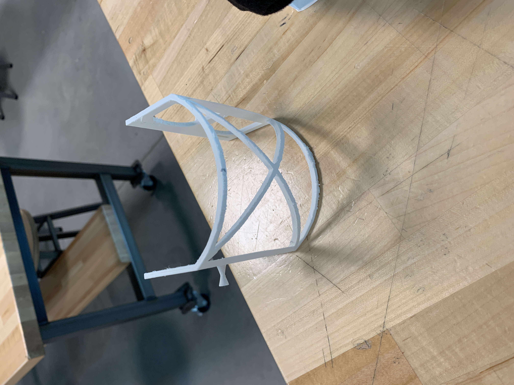
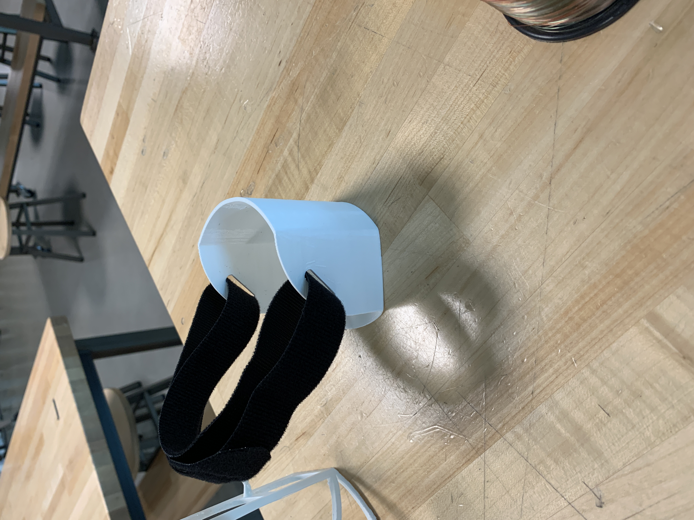
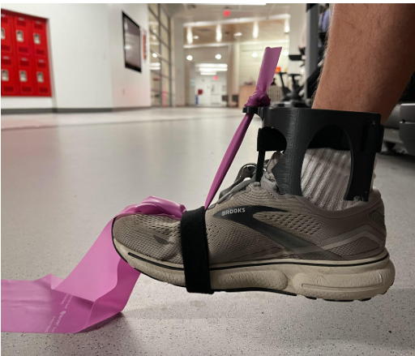
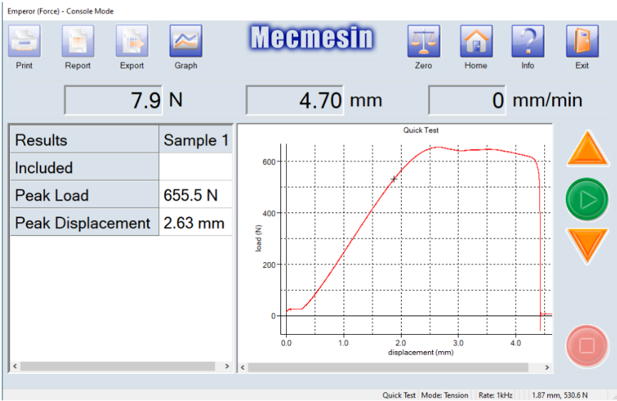
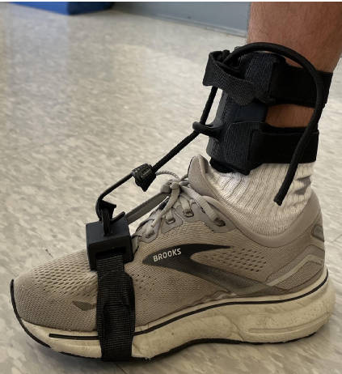
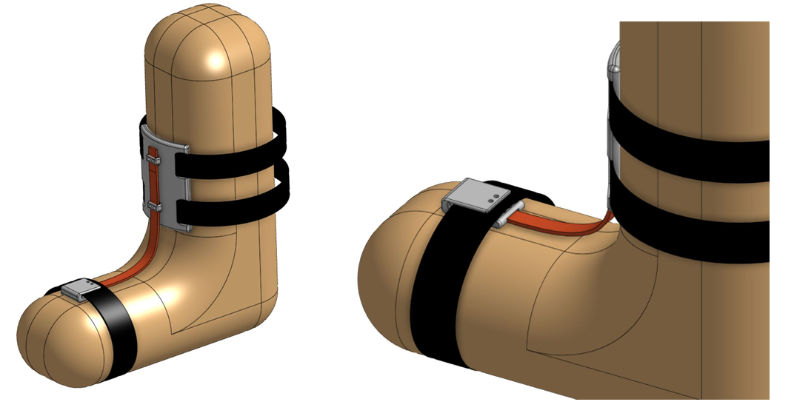

Biomedical Engineering · Mechanical Design · Prototyping
Drop-Foot Device
Design and prototyping of a low-profile assistive device intended to improve foot clearance and restore a more natural gait cycle for individuals experiencing drop-foot.

Biomedical Engineering Design Project
Assistive Technology · Biomechanics
CAD · 3D Printing · Mechanical Testing
Concept · Prototype · Evaluation
Overview
Developing a More Natural Approach to Drop-Foot Assistance
This team-based biomedical engineering project focused on developing an affordable and discrete device for individuals experiencing permanent drop-foot. Existing rigid braces can reduce the risk of tripping by supporting the foot during swing, but can also restrict natural ankle motion and limit plantarflexion and dorsiflexion.
Our goal was to develop a device that provided sufficient support to improve foot clearance while allowing the foot to move more naturally throughout the gait cycle. The design therefore needed to balance functionality, comfort, weight, durability, ease of use, and cost.
After evaluating multiple mechanical concepts, the team selected an elastic-based approach and developed a series of physical prototypes to evaluate the concept, refine the geometry, and identify limitations in the design.
Engineering Challenge
Designing Around the Gait Cycle
Drop-foot occurs when an individual has reduced control over ankle and foot movement. During the swing phase of walking, insufficient dorsiflexion can cause the foot to drag or strike the ground, increasing the risk of tripping.
Individuals may compensate by lifting the knee higher or swinging the leg outward to clear the foot. While these strategies can reduce immediate tripping risk, they can also produce less efficient and less natural movement patterns.
The design challenge was therefore not simply to hold the foot in an elevated position. The device needed to provide support during swing while allowing the foot to relax and move into plantarflexion during stance and push-off.
This created a fundamental tradeoff between providing enough mechanical assistance to improve foot clearance and preserving enough freedom of movement to maintain a more natural gait.
Design Requirements
Defining Performance & Usability Targets
Before developing the final concept, the team established performance and usability requirements to guide the design. Functionality and comfort were identified as the highest priorities, followed by durability, weight, and ease of use.


Key targets included supporting walking at approximately 2 mph, achieving 15–30° of dorsiflexion and 20–50° of plantarflexion, minimizing device weight, and allowing the device to be worn comfortably for extended periods.
Additional considerations included adjustability, ease of donning and doffing, quiet operation, cleanability, weather resistance, and manufacturability.
Concept Development
Exploring Multiple Mechanical Approaches
Multiple concepts were developed to determine how mechanical assistance could be applied throughout the gait cycle. The team considered pneumatic, motorized, spring-based, sensor- driven, gyroscopic, and elastic mechanisms.
Motorized and sensor-driven approaches offered greater control but introduced additional complexity, weight, response-time requirements, and implementation challenges. Spring-based mechanisms provided another possible approach but introduced additional components and mechanical complexity.
The elastic-based concept offered a simpler alternative. An elastic element could provide upward assistance during swing while still allowing the foot to move downward during stance. This approach also supported the project's goals for comfort, weight, cost, and ease of use.

Concept Selection
Selecting the Elastic-Based Architecture
The alternative concepts were evaluated using a weighted comparison of functionality, cost, comfort, durability, weight, and ease of use. Functionality and comfort received the greatest weighting because the device needed to improve gait without creating a system that users would be reluctant to wear.
The elastic-based design achieved the strongest overall evaluation. It offered a balance between mechanical assistance and natural movement while avoiding many of the weight, complexity, and response-time concerns associated with powered concepts.
This decision also aligned with the project's affordability and discretion goals, making the concept practical to prototype within the project's available time and resources.
Prototype Development
From Works-Like Model to Wearable Prototype
The first prototype was intentionally simple, using Velcro straps and elastic exercise bands to determine whether the fundamental mechanism could provide the desired assistance.
Initial testing produced approximately 15–20° of dorsiflexion, demonstrating that the elastic concept could provide meaningful upward support and validating the basic mechanical approach.


Iterative Refinement
Subsequent iterations focused on improving the strength, fit, elastic attachment, and overall profile of the device. The shin component evolved from an initial U-shaped concept into a more compact shin-guard configuration to accommodate a wider range of leg and ankle dimensions.
The resulting V3 prototype was approximately 2.5 inches wide by 3.5 inches tall, with a curved profile designed to follow the shape of the lower leg. Antimicrobial padding was added between the device and the user to improve comfort, grip, and cleanliness.
Prototyping & Manufacturing
Designing Through Physical Prototyping
Additive manufacturing allowed the team to rapidly transition between CAD revisions and physical evaluation. The custom components were produced using 3D printing while standard, off-the-shelf components were used for the remaining mechanical interfaces.
This approach reduced development cost and made it possible to quickly evaluate changes to component geometry, attachment points, fit, and mechanical behavior.

Testing & Evaluation
Evaluating Gait Assistance & Mechanical Performance
Physical testing was used to evaluate whether the prototype could provide the intended assistance while maintaining useful ankle movement. Testing focused on the behavior of the foot throughout the gait cycle and the ability of the elastic mechanism to support the foot during swing.

Prototype Results
The V3 prototype successfully provided the intended plantarflexion behavior while producing slightly less dorsiflexion than the target range. Testing also indicated that the elastic mechanism provided upward support during the swing phase while allowing the foot to move downward during stance.
A test user described the prototype as comfortable and supportive when simulating drop-foot. The user also noted an upward, spring-like force during the final portion of the gait cycle, suggesting that the mechanism could assist with preparing the foot for the following step.
Material Evaluation
Validating the Prototype Material
Mechanical calculations were used to estimate the force required to lift the foot, followed by tensile testing of the PLA used for the printed components. Ten tensile tests produced an average failure load of 672.2 N, with individual samples reaching approximately 650 N or greater before failure.
Although the prototype remained functional during testing, the tensile results identified an important limitation of PLA for a production device. Its relatively brittle failure behavior could lead to abrupt component failure rather than gradual deformation, indicating that a stronger and less brittle material would be preferable for future iterations.

Engineering Tradeoffs
Balancing Function, Comfort & Practicality
The development process demonstrated the tradeoffs involved in designing an assistive device for direct interaction with the human body. Increasing mechanical support could improve foot clearance, but excessive restriction could interfere with natural movement and reduce comfort.
The team therefore prioritized a lightweight, simple mechanism that could provide useful assistance without requiring motors, sensors, or extensive electronics. The use of primarily off-the-shelf components also helped maintain affordability and simplified procurement.
Safety and reliability remained important limitations. Additional stress, fatigue, durability, and gait testing would be necessary before the device could be considered suitable for real-world medical use.
Medical Device Considerations
Designing Beyond the Prototype
Because the device is intended to interact directly with human movement, development beyond the prototype stage would require substantially more validation. Material selection, durability, fatigue performance, user safety, and consistent mechanical behavior would all need to be demonstrated under representative conditions.
The project also considered medical-device quality and regulatory requirements. These considerations highlighted the additional testing, documentation, risk management, and design controls required to transition from an academic prototype toward a commercially viable assistive device.
Final Prototype
The Stop Drop V3
The V3 prototype demonstrated the core concept of a semi-active elastic drop-foot device. The design provided upward support during swing while allowing greater ankle movement than a rigid brace.
The prototype emphasized a lightweight and relatively low-profile form that could be worn without the bulky external structure associated with more complex exoskeleton-style systems.

Future Development
Toward a Lower-Profile, More Refined Device
The next proposed iteration focused on reducing the overall profile of the device while preserving the function demonstrated by V3. The primary changes included replacing the bungee cord with a flat elastic band and moving the foot attachment point inside the shoe.

Moving the attachment inside the shoe would create a more discrete wearing experience without requiring permanent modification of the footwear. The shin component would also transition from circular attachment holes to rectangular slots to improve the attachment interface.
These changes represent a proposed V4 design rather than a validated prototype. The new elastic configuration and in-shoe attachment would require additional testing to determine whether the device maintains the performance demonstrated by V3.
Longer-Term Development
Further development could investigate improved materials, fatigue resistance, more extensive gait testing, and additional user evaluation. A future actuated version could also provide an opportunity to explore more controlled assistance while building on the mechanical foundation established by the elastic design.
Project Deliverables
Explore the Full Project
The complete project documentation provides additional detail on the design process, calculations, testing, engineering analysis, and development of the Stop Drop.